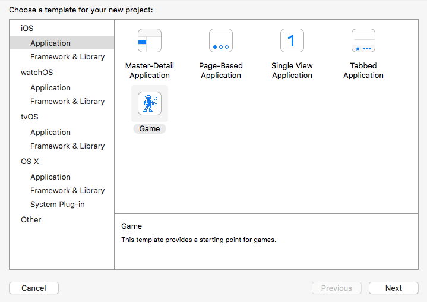
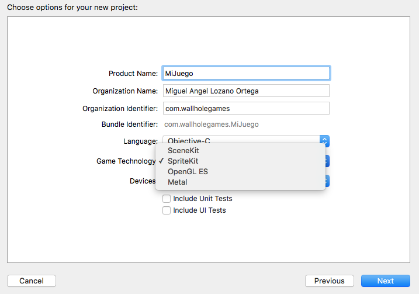
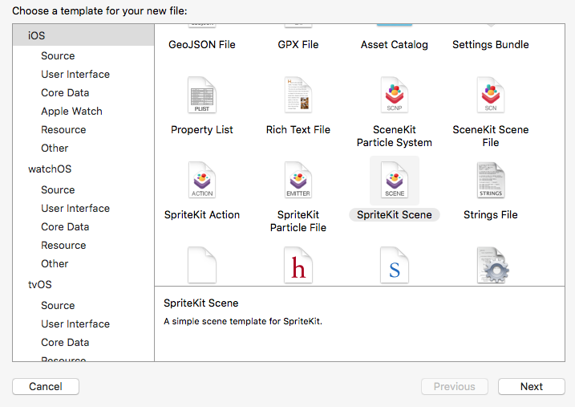

Tecnologías nativas para el desarrollo de videojuegos¶
Aunque el uso de motores multiplataforma nos aporta una gran cantidad de ventajas, es algunos casos nos podría interesar desarrollar videojuegos utilizando las tecnologías nativas de la plataforma. Una posible razón para hacer esto es la de conseguir reducir el tamaño de la aplicación lo máximo posible, lo cual puede ser conveniente en juegos sencillos que no necesiten un motor complejo.
La tecnología nativa para desarrollo de videojuegos que podemos encontrar en las principales plataformas móviles es OpenGL ES. Se trata de una librería de bajo nivel, sobre la que tendremos que construir nuestro propio motor adaptado a las necesidades de nuestro videojuego.
En el momento de la escritura de este texto, OpenGL ES es la única opción nativa en el caso de Android, recomendándose utilizar el NDK para la implementación de nuestro propio motor del videojuego, y así poderlo optimizar al máximo.
En Windows Phone encontraremos también la API nativa XNA. Contamos con el entorno XNA Game Studio dedicado al desarrollo de videojuegos en la plataforma de Microsoft.
Sin embargo, la plataforma que mayor número de opciones nativas nos ofrece es la de Apple. En iOS, además de OpenGL ES, encontramos Metal, una librería gráfica similar a bajo nivel optimizada para esta plataforma. A parte de las opciones a bajo nivel, tenemos también dos librerías de alto nivel para el desarrollo de videojuegos 2D y 3D respectivamente: SpriteKit y SceneKit. Cuando desde Xcode creamos un proyecto de tipo Game nativo, nos preguntará cuál de las anteriores librerías queremos utilizar como base.
 
Vamos a centrarnos en las tecnologías de alto nivel: SpriteKit y SceneKit. Con ellas dispondremos además herramientas visuales en el entorno para crear las escenas del videojuego. Conviene destacar también que estas tecnologías presentan abundantes similitudes con Cocos2d-x y Unity respectivamente.
Desarrollo de juegos con SpriteKit¶
SpriteKit es un framework nativo de la plataforma iOS destinado al desarrollo de aplicaciones que muestren cualquier tipo de gráficos 2D animados, como es el caso de los videojuegos. Todas las clases de este framework tienen el prefijo SK, y se encuentra disponible a partir de iOS 7.
Su API es muy parecida a la del motor de videojuegos Cocos2d-x, por lo que la transición entre estas tecnologías será muy sencilla.
La escena de SpriteKit¶
Al igual que en dicho motor, utiliza una organización jerárquica de los elementos escena, es decir, todos los elementos de la escena son nodos que se organizan en forma de de árbol.
Tendremos una escena para cada estado (pantalla) del juego (menú principal, opciones, partida, etc). Para crear una escena normalmente crearemos una clase que herede de SKScene, por ejemplo:
1 2 3 4 5 | #import <SpriteKit/SpriteKit.h> @interface MainMenuScene : SKScene @end |
Para poder mostrar esa escena necesitaremos previamente contar con una vista de tipo SKView. Por ejemplo, podemos introducir una vista de este tipo dentro de nuestro controlador en el storyboard. Al cargar nuestro controlador podemos obtener dicha vista y cargar en ella la escena principal:
1 2 3 4 5 6 7 8 9 10 11 12 13 | - (void)viewDidLoad { [super viewDidLoad]; // Obtenemos la vista del juego (suponemos que es la vista raíz de nuestro controlador). SKView * skView = (SKView *)self.view; // Creamos la escena. MainMenuScene *scene = [MainMenuScene nodeWithFileNamed:@"MainMenuScene"]; // Mostramos la escena en la vista. [skView presentScene:scene]; } |
Hemos de destacar que el constructor de la escena toma como parámetro el nombre de un fichero. El fichero que deberemos pasarle es un fichero de escena, con extensión .sks (Scene Kit Scene) que puede contener los elementos de la escena (sprites, etiquetas de texto, cámara, luces, etc).
Podemos crear este fichero desde Xcode, con File > New > File ... > iOS > Resource > SpriteKit Scene:

Podemos dejar esta escena vacía y crear su contenido de forma programada. Vamos a hacerlo así de momento.
La clase escena tiene un método -(void)didMoveToView:(SKView *)view que se invocará cuando la escena se pase a ejecutar en la vista del juego. Podemos aprovechar este método para crear de forma programada el contenido de la escena. Este contenido se definirá como un árbol de nodos (objetos de tipo SKNode o de alguna de sus subclases).
Nodos de la escena¶
La escena de SpriteKit se define como un árbol de nodos, todos ellos de tipo SKNode o alguna de sus subclases. Destacamos los siguiente tipos de nodos:
SKNode: Clase de la que heredan todos los nodos. Podemos instanciarla directamente y añadir el nodo a la escena. Este tipo de nodos no mostrarán nada en la escena, pero son útiles para agrupar otros nodos en el árbol de la escena y poder moverlos de forma conjunta.SKLabelNode: Subclase deSKNodeque mostrará una etiqueta de texto en la escena.SKSpriteNode: Subclase deSKNodeque mostrará un sprite en la escena.
Los nodos genéricos se instancian mediante el método factoría node:
1 | SKNode *miNodo = [SKNode node]; |
Podremos cambiar la posición (x,y) de todos los nodos en la escena, así como su orden z, que determinará qué nodos se muestran por delante de otros:
1 2 | miNodo.position = CGPointMake(100, 100); miNodo.zPosition = 5; |
También podremos cambiar su rotación y su escala (x,y):
1 2 3 | miNodo.zRotation = 90; miNodo.xScale = -1; miNodo.yScale = 1; |
Es de especial interés la posibilidad de hacer un escalado de -1, para así crear un efecto "espejo".
Además de estas propiedades, otra característica importante de los nodos es su método addChild:, que nos permite añadir otro nodo como hijo:
1 2 | SKNode *miGrupo = [SKNode node]; [miGrupo addChild: miNodo]; |
El agrupamiento jerárquico de nodos es importante porque nos permitirá por ejemplo mover de forma conjunta todo un grupo de nodos cambiando únicamente la posición del nodo padre.
Encontraremos también métodos y propiedades para conocer quién es el padre de un nodo, eliminar un hijo de un nodo, o moverlo a otro nodo padre, entre otras funciones.
Etiqueta de texto
Un tipo de nodo fundamental es la etiqueta de texto (SKLabelNode) que nos permitirá mostrar texto en la escena. Este tipo de nodo se puede crear a partir de la fuente a utilizar:
1 | SKLabelNode *miEtiqueta = [SKLabelNode labelNodeWithFontNamed:@"Chalkduster"]; |
A parte de las propiedades generales de los nodos, la propiedad más importante de este tipo de nodo es text, que nos permite especificar el texto a mostrar por la etiqueta:
1 | miEtiqueta.text = @"Super Mobile Game"; |
Este tipo de nodos nos permitirá cambiar además el tipo de fuente, su color, o la alineación del texto.
Sprites
El tipo de nodo más importante en un videojuego es el sprite, que representa aquellas entidades que aparecen en la escena (personajes, objetos, etc), y que se muestran como una imagen o una animación. Podemos crear un sprite a partir del nombre de la imagen que queremos que muestre:
1 | SKSpriteNode *miSprite = [SKSpriteNode spriteNodeWithImageNamed: @"mario"]; |
Dado que el sprite muestra una imagen en la escena, una propiedad importante será size, que nos indicará el tamaño del sprite en puntos. Esto será importante porque se tendrá en cuenta también para el cálculo de colisiones con otros sprites de la escena.
Además, tambien tiene una propiedad anchorPoint, cuyo valor por defecto es (0.5, 0.5), y que siempre tomará valores entre (0.0, 0.0) y (1.0, 1.0). Esta propiedad nos indicará cómo posicionar el sprite en la escena cuando modifiquemos su propiedad position. Se trata de las coordenadas locales dentro de la imagen del sprite que se situarán en la posición indicada por position, siendo:
(0.0, 0.0)es la esquina inferior izquierda del sprite.(0.5, 0.5)es el centro del sprite.(1.0, 1.0)es la esquina superior derecha del sprite.
Acciones¶
Los nodos de la escena nos permiten ejecutar acciones, que modifican las propiedades del nodos (como su posición o rotación) a lo largo del tiempo. Estas acciones se definen como objetos de la clase SKAction.
Dentro de SKAction encontramos númerosos métodos factoría para crear diferentes tipos de acciones. Por ejemplo, tenemos acciones para mover un nodo a una posición o rotarlo a un cierto ángulo:
1 2 3 4 | SKAction *accionMoverFinal = [SKAction moveTo:CGPointMake(200,200) duration:2.0]; SKAction *accionRotarFinal = [SKAction rotateToAngle:3.14f duration: 1.0]; SKAction *accionMoverInicio = [SKAction moveTo:CGPointMake(100,100) duration:2.0]; SKAction *accionRotarInicio = [SKAction rotateToAngle:0.0f duration: 1.0]; |
En estas acciones se indica la posición o ángulo destino a la que se moverá el nodo, y el tiempo que tardará en hacerlo (en segundo).
Existen también otros muchos tipos de acciones para modificar otras propiedades como la escala, la textura, el color o el control de audio.
También encontramos acciones que nos permiten combinar otras acciones, o repetirlas:
1 2 | SKAction *accionSecuencia = [SKAction sequence: @{accionMoverFinal, accionRotarFinal, accionMoverInicio, accionRotarInicio}]; SKAction *accionRepite = [SKAction repeatActionForever:accionSecuencia]; |
Con esta última acción podemos especificar por ejemplo el movimiento de "patrulla" de un enemigo, que se moverá contínuamente entre los puntos (100, 100) y (200, 200).
Podemos ejecutar cualquiera de las acciones anteriores sobre cualquier nodo, utilizando el método runAction: de la clase SKNode:
1 | [miNodo runAction: accionRepite]; |
De esta forma dicho nodo reproducirá la conducta especificada por la acción.
Podremos parar todas las acciones de un nodo con removeAllActions. También podemos añadir una acción con una clave (key) que posteriormente nos permitirá parar únicamente dicha acción, o podemos ejecutar una acción proporcionando un bloque de código que se ejecutará cuando la acción se complete.